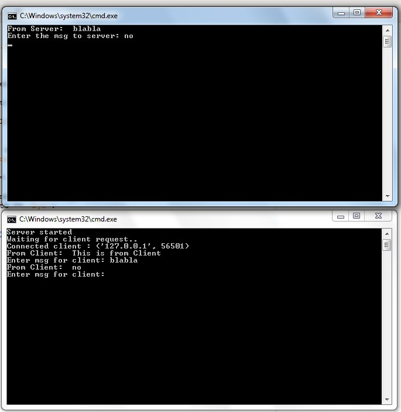

Описание: Программа на языке PYTHON
import socket
SERVER = "127.0.0.1"
PORT = 40100
client = socket.socket(socket.AF_INET, socket.SOCK_STREAM)
client.connect((SERVER, PORT))
client.sendall(bytes("This is from Client", 'UTF-8'))
while True:
in_data = client.recv(1024)
print("From Server: ", in_data.decode())
out_data = input("Enter the msg to server: ")
client.sendall(bytes(out_data, 'UTF-8'))
if out_data == 'bye':
break
client.close()
=========================================
import socket
LOCALHOST = "127.0.0.1"
PORT = 40100
server = socket.socket(socket.AF_INET, socket.SOCK_STREAM)
server.bind((LOCALHOST, PORT))
server.listen(1)
print("Server started")
print("Waiting for client request..")
clientConnection, clientAddress = server.accept()
print("Connected client :", clientAddress)
msg = ''
while True:
in_data = clientConnection.recv(1024)
msg = in_data.decode()
if msg == 'bye':
break
print("From Client: ", msg)
out_data = input("Enter msg for client: ")
clientConnection.send(bytes(out_data, 'UTF-8'))
print("Client disconnected....")
clientConnection.close()
